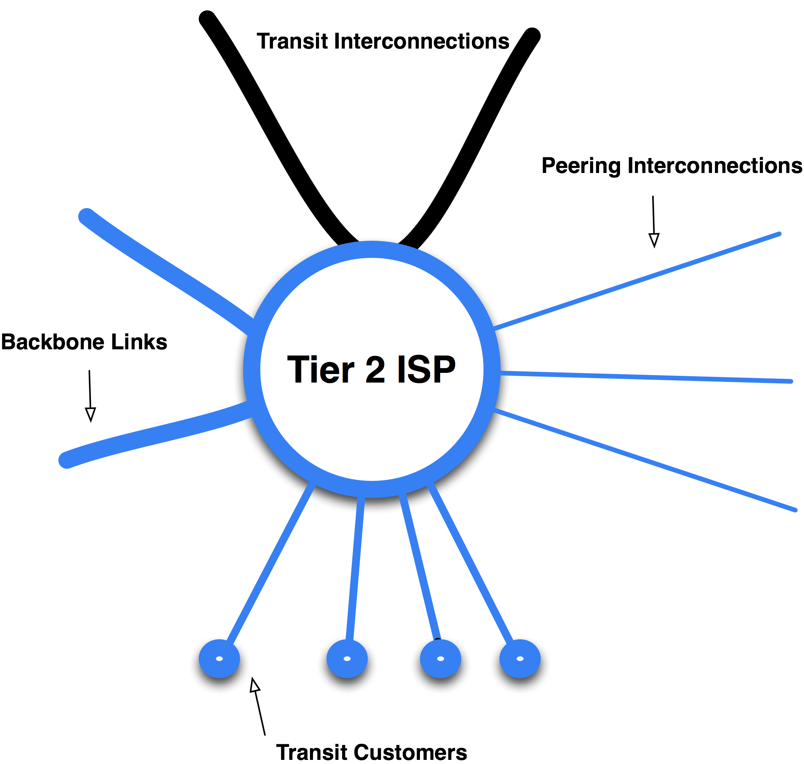
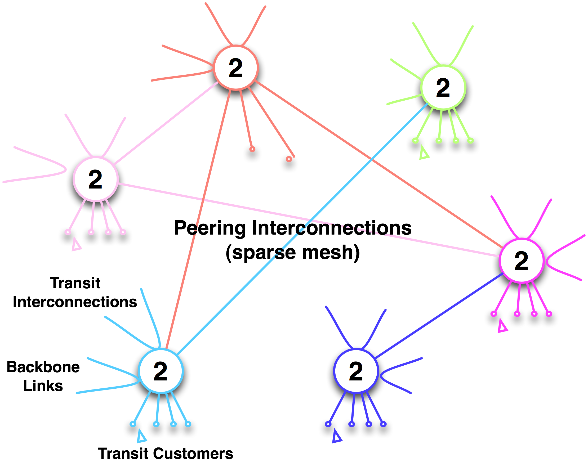

The Tier 2 ISP
Roughly speaking, all non-Tier 1 ISPs in the Internet Region are Tier 2 ISPs.
Definition: A Tier 2 ISP is an Internet Service Provider that purchases transit to reach some destination(s) within an Internet Region.
The Tier 2 ISP litmus test is as follows: If an ISP is paying to reach any destination within the Internet Region, it is a Tier 2 ISP.
The model is shown graphically in Figure 9-6.
We see that the Tier 2 ISP model is identical to the Tier 1 ISP model with one important distinction: The Tier 2 ISP purchases transit from an upstream ISP, shown graphically as lines coming out of the top of the model.

Figure 9-6. The Tier 2 ISP model.
The Tier 2 ISP Motivations and Behaviors
Tier 2 ISPs are motivated to reduce their monthly transit fees, so they tend to peer openly or selectively. As a result of this broad Peering Inclination, Tier 2 ISPs tend to prefer Public Peering. Many use Private Peering as well, particularly for the larger peers.
Tier 2 ISP Peering Policies
Tier 2 ISPs tend to have matching Peering Policies and Peering Inclinations.
Many Tier 2 ISPs have an Open Peering Policy and will peer with anyone.
Some ISPs are slightly more selective. They may require interconnects deployed across three time zones or require a certain traffic level and a 24/7 Network Operation Center (NOC). The underlying inclination, however, is to peer broadly.
Tier 2 ISPs are a social species. There is heterogeneity and competition across the Tier 2 ISP population, but somehow there is also great cooperation. This cooperation is not purely altruistic; it is also driven by broadly aligned interests. Tier 2 ISPs want to offload as much traffic as possible in free peering relationships. They are, therefore, also interested in encouraging others into the peering ecosystem so they can offload more traffic.
To this end, many of the active players in the ecosystem help their IXP operators evangelize Internet Peering. You will find the Tier 2 ISPs actively participating, even leading the community peering forums. This behavior is not surprising from players looking to increase the amount of peering that they have. Some in this group have been able to peer away 70% of their Internet traffic!
Notes from the field.
Pulse Peering
Brokaw Price (Yahoo! at the time) coined the term for open peering as “pulse peering; if you have a pulse we will peer with you!”
The Tier 2 ISP Interconnect Mesh
The Tier 2 ISPs generally interconnect with each other in one or more Interconnect Regions within an Internet Region.
Unlike Tier 1 full-mesh peering, Tier 2 ISP peering is generally a partial mesh (Figure 9-7), for several reasons. Some ISPs are regional and don’t peer in every Interconnect Region, while others are geographically distributed and require multiple points of interconnect. This setup removes some interconnection possibilities from the Tier 2 mesh. Most ISPs won’t peer with a peer’s customer, and this unwillingness to peer also removes some Tier 2 ISP interconnection possibilities. Some content-heavy ISPs have no interest in peering with other content-heavy ISPs. And so on.
The Tier 2 ISPs are disappointed when peering is denied, but they are not too upset about it. Any traffic not peered is sent through a transit provider, so peering in the Tier 2 ISP space is thought of as a routing optimization. The failure to obtain peering is merely an inability to exercise a particular optimization.
Relationship of Tier 2 ISPs with Tier 1 ISPs. Tier 1 ISPs are seen as suppliers and also as competitors for the really big customers. Since the Tier 2 ISPs know that they will be referred to as the “middle man” in competitive situations, they tend not to mention that they purchase transit at all. As one industry expert put it, “In a competitive bid situation, everyone is a Tier 1 ISP.”
Figure 9-7. A Tier 2 ISP sparse peering mesh in an Internet Region. There are different meshes in each interconnect region.